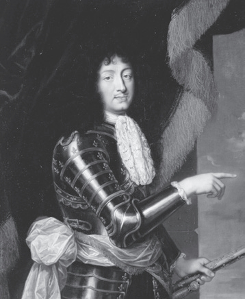
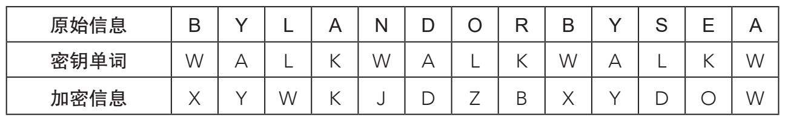
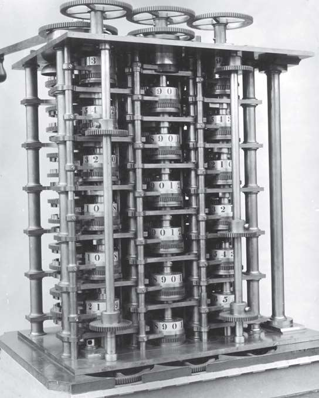

虽然等了近乎8个世纪，但以德·维吉尼亚方阵为首的多表加密法最终以智取胜，打败了频率分析。说来奇怪，虽然单表系统脆弱易攻，但自身也有优势，那就是好部署。密码专家呕心沥血，不断完善这个过程，在算法中加入巧妙的方法，但从根本上说，理念都与最简单的加密方法相同。
密码专家：太阳王路易十四
路易十四执政时期，虽然坊间对安托万（Antoine）和博纳旺蒂尔·罗西尼奥尔（Bonaventure Rossignol）兄弟知之甚少，但他们却是17世纪欧洲大地上最令人闻风丧胆的人物。作为密码专家，他们不仅在破解法国敌方（也是国王的仇人）信息方面能力卓越，创造性也同样突出。他们创造了“伟大密码”（Grande Chiffre），用一套复杂的音节替换算法加密国王最重要的信息。不过，两兄弟死后这种加密法就失传了，从此无人能破解。1890年，一位密码专家，退伍军人艾蒂安·巴泽里耶斯（Étienne Bazeries）踏上了破解这些加密文件的艰难征程，几年的勤勉时光，让他成为破解太阳王密信的无可争议的专家。

单表系统中最成功的一个范例就是“同音异字替代加密”，这么做是为了防止对方使用数据分析破解，毕竟按照字母出现的最大频率就能推导出替换率。因此，在一篇任意语言写成的文本中，如果字母E占10%，使用同音异字替换加密法用10个其他字符替换E，就能改变这个频率。18世纪之前，这种方法一直备受青睐。
然而，时光继续流转，伟大的民族和国家涌现出来，国家之间的外交对保密通信的要求越来越高。随着新的通信技术的出现，这一趋势进一步增强，比如电报，它大大提高了通信量。欧洲国家建立了俗称“黑屋”的通信活动神经中枢，在那里，专家加密那些最需谨慎处理的通信，并破解截获的敌方信息。很快，黑屋的专家使得任何形式的单表替换加密法无论如何改进，统统都不再安全。慢慢地，这场信息交流比赛中的伟大玩家开始选择多表加密法。在加密者的努力下，破译者失去了最有力的武器——频率分析，再次处于下风。
英国数学家查尔斯·巴布奇（1791-1871）是19世纪最耀眼的科学家之一。他发明了一台早期机械计算机，叫作“差分机”，走在了时代的前沿。他对当时的数学和技术都有着浓厚的兴趣。巴布奇决定用自己的智慧破解多表加密法，而德·维吉尼亚方阵就是他的主要目标。他把注意力集中在这种加密法的特点上。此时我们需要回想一点：在德·维吉尼亚加密法中，选中的密钥单词长度决定了使用的加密密码表的数量。因此，如果密钥单词是“WALK”（步行），原始信息的每个字母最多可以用四种方式加密。对于句子来说同样是如此。巴布奇开始攀登多表加密法这个悬崖峭壁，而这点正是他的踏足点。我们来看一个例子，下面是一条用德·维吉尼亚方阵加密的信息：

大家马上就能注意到，原始信息中的两个“BY”与加密信息中两个“XY”同时重复了。这是因为第一个“BY”在8个字符后，又出现一次，而8是密钥单词WALK字母数4的倍数。有了这条信息，再加上足够长的原始信息，就有可能猜到密钥单词的长度了。过程如下：把所有重复的字符列出来，观察隔了多少字符出现了重复。然后，计算这些数字的整数除数。其公约数有可能就是密钥单词的长度。
假设出现次数最多的公约数是5，那5就最有可能是密钥单词的字母数。接下来，我们必须要猜出密钥单词中的5个字母的对应字母各是什么。回想加密过程，密钥单词的每个字母在德·维吉尼亚方阵中都是一个与原始信息中字母对应的单表加密。我们假设的包含5个字母的密钥单词（C1, C2, C3, C4,C5）的第一个字母与第六个字母（C6）使用的加密字母表相同，第七个（C7）与C2相同，以下同理。因此，破译者实际上处理的是5个独立的单表加密，而单表加密在传统的密码分析面前都不堪一击。

1991年，根据发明家巴布奇留下的方案制造的差分机。这台仪器能够计算对数函数和三角函数的近似值，因此也就能计算天文表。可惜巴布奇有生之年没有见到它被制造出来。
因此我们得出结论，可以根据加密信息中的每个用密钥单词中的相同字母（C1, C6, C11,…与C2, C7, C12,…）加密的字母设计出一个频率表，然后你会得出五组构成全部信息的字母。最后借助明文信息使用语言的频率表，解密密钥单词。如果两组数据不能吻合，那就再试长度的可能性位居第二的密钥单词。这次我们至少能够确定一个可能的密钥单词，剩下的就是解密信息了，这个方法攻破了多表加密法。
尽管如此，巴布奇于1854年前后完成的这项令人震惊的试验仍将默默无闻。这位性情古怪的英国学者从未向世人公布他的发现，直到近期对他的笔记进行研究时，才发现原来他是破解多表密钥单词的先驱。令全世界的密码破译者感到庆幸的是，在巴布奇发明他的解密方法几年后，也就是在1863年，普鲁士军官弗里德里希·卡西斯基（Friedrich Kasiski）向世人公布了一个类似的方法。
无论谁是破解多表加密法的第一人，总之，它不再那样牢不可破。从那时起，加密强度不再单纯依靠加密算法上的革新，而是越来越多地依靠增加潜在的加密字母表数量，数量越多，频率分析和它的变式就越不可能实现。而对垒的另一方的目标，就是想方设法加快密码分析的速度。两方遥相呼应，研究方向指向了同样的目标，共同促成了一个进程的诞生：计算机浪潮。